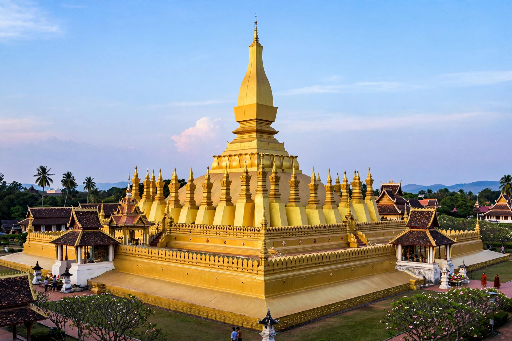

| Kingdom of Lan Xang | |
|---|---|
| Capital | Luang Prabang (1353–1560); Vientiane (1560–1707) |
| Common languages | Lao |
| Religion | Theravada Buddhism |
| Established | 1353 |
| Disestablished | 1707 |
Lan Xang (Lao: ລ້ານຊ້າງ, "million elephants") was a Lao kingdom that existed from 1353 to 1707. Founded by Fa Ngum, it united the Lao principalities of the middle Mekong valley and became one of the largest kingdoms in mainland Southeast Asia. The modern country of Laos traces its historical identity to Lan Xang.

Fa Ngum, a Lao prince exiled to the Khmer court at Angkor, returned north with a Khmer army and conquered the Mekong valley principalities, taking Luang Prabang (then Xieng Dong Xieng Thong) in 1353. He introduced Theravada Buddhism as the state religion and brought the sacred Phra Bang Buddha image, from which Luang Prabang later took its name.
Under King Sourigna Vongsa (reigned 1637–1694), Lan Xang enjoyed its golden age: borders were fixed by treaty with neighbouring states, trade flourished, and European visitors such as the Dutch merchant Gerrit van Wuysthoff reached Vientiane. Earlier, King Setthathirath (reigned 1548–1571) had moved the capital to Vientiane in 1560, resisted Burmese invasions, and built the Pha That Luang stupa.
Sourigna Vongsa's execution of his own son for adultery left no acceptable heir, and the succession dispute after his death led to the kingdom splitting in 1707 into the rival kingdoms of Luang Prabang, Vientiane and Champasak, which eventually came under Siamese suzerainty.